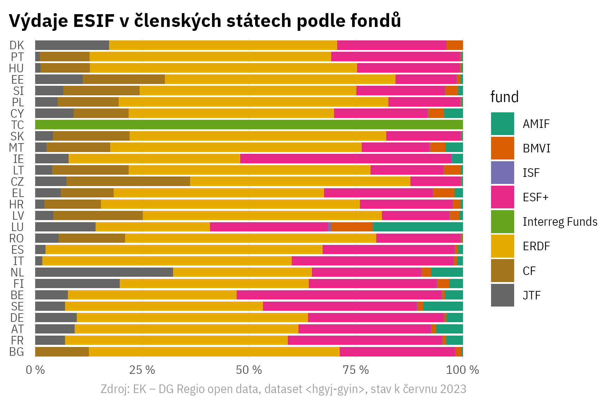

Mezinárodní srovnání plánovaných výdajů 2021+
Q: je to tažené rozdílným složením fondů?

Máme vysoký podíl kohezního fondu na celku, v něm relativně nižší podíl klimatu, ale celkově to přispěje k relativně vysokému klimatickému závazku.
Takže ČR má výdaje fragmentované mezi mnoho kategorií, je relativně atypická ve vysokých investících do městské dopravy. V top 10 vůbec nemáme zvyšování efektivity budov (kromě veřejné infrastruktury - co se za tím skrývá?)
- všechny zatím financované projekty v
JTF
JTF CZ
Jaké oblasti intervence máme v českém JTF?
JTF srovnání
- relativně hodně: revitalizace industriálu, investice do výzkumu a VŠ, infrastruktura pro podnikání, smart energy systems
- relativně málo: RDI ve velkých firmách, RDI v malých firmách, kolejových vozidel, adaptace lidí na trhu práce
JTF implementace
Jaké projekty jsou zatím podpořené v JTF?
- infrastruktura pro terciární vzdělávání: ve skutečnosti jeden projekt multifunkční knihovny v Ostravě (Černá kostka) – nejen pro VŠ s tématy digitalizace a spol.
JTF zelenost
Kdybychom na alokace v JTF aplikovali stejné climate markery jako na peníze mimo JTF, jaký by byl jeho climate share v jednotlivých státech?

Na co jde JTF v Dánsku, když není skoro vůbec zelené?